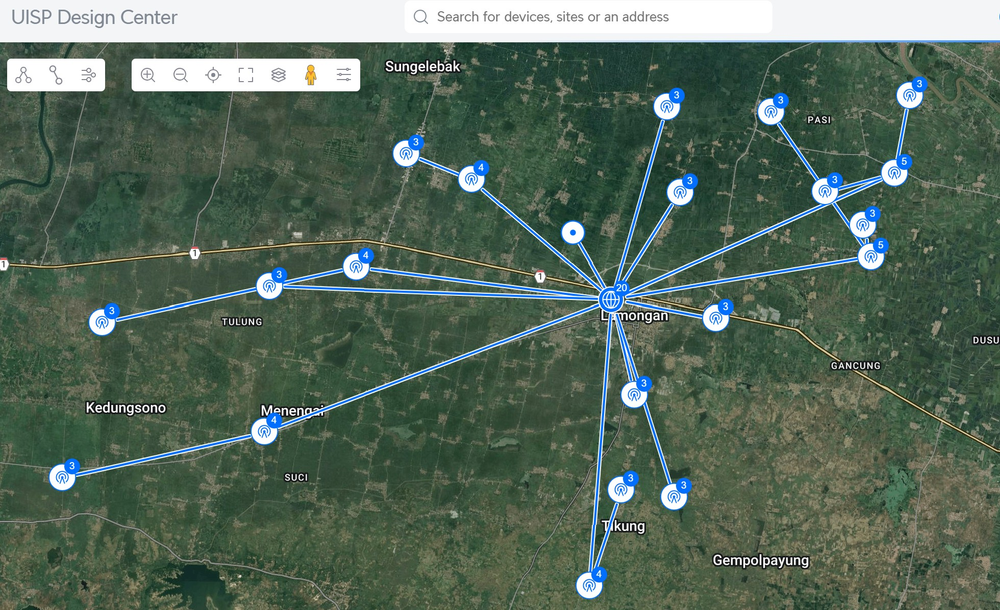
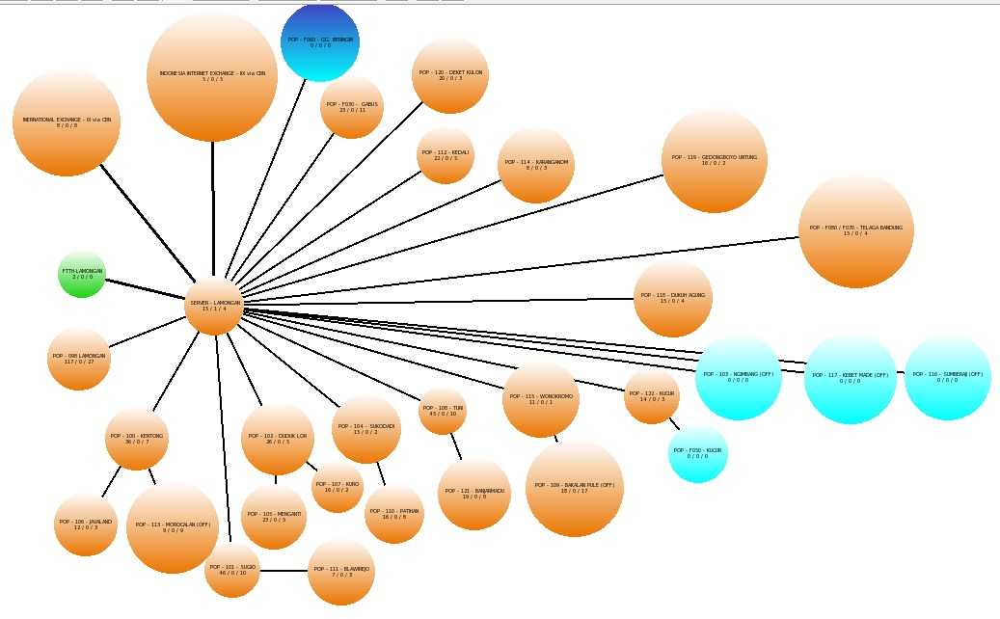
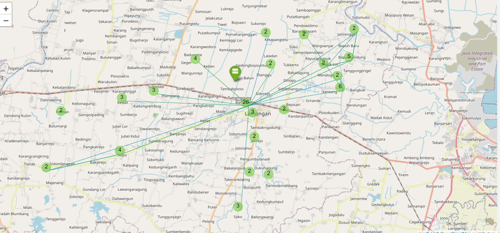

Project & Home Labs
Eksplorasi Riset, eksperimen dan implementasi praktis dalam bidang Networking, Cybersecurity, Artificial Intelligence (AI), dan Blockchain.
~ Ervinda Pratama
Network & Security Projects & Home Labs
📡 Wireless Distribution Outdoor di 22 BTS dengan MikroTik & Air Fiber

- 🔹 Penentuan target pembangunan jaringan serta perencanaan sistem jaringan
- 🔹 Penyusunan topologi jaringan mulai dari Core Network (Router Backbone, Switch Distribution/Access, AP PtP, Switch on Site, dan AP PtMP)
- 🔹 Melakukan site planning dengan menggunakan Ubiquity Maps
- 🔹 Survey lokasi untuk setiap titik agar dapat diketahui medan yang ada
- 🔹 Dokumentasi dan pengujian kebijakan keamanan firewall
- 🔹 Penyusunan anggaran serta penentuan perangkat (type/merk)
- 🔹 Penyusunan timeline proyek dan penjadwalan tim lapangan
- 🔹 Instalasi perangkat jaringan indoor/outdoor sesuai dengan timeline
- 🔹 Konfigurasi serta optimalisasi link PtP antar site agar dapat sesuai dengan target
- 🔹 Pengujian dan evaluasi jaringan yang telah dibangun
- 🔹 Penyusunan dokumentasi proyek
🖥️ Monitoring Jaringan dengan The Dude MikroTik

- 🔹Instalasi VMware sebagai wadah MikroTik CHR
- 🔹Instalasi MikroTik CHR dengan spesifikasi sesuai dengan kebutuhan
- 🔹Instalasi package The Dude pada MikroTik CHR
- 🔹Create Network Maps sesuai dengan topologi jaringan
- 🔹Create Topologi Tree pada Device (Parent & Child) sesuai dengan topologi
- 🔹Konfigurasi alert pada The Dude Notification (sound, pop-up, telegram)
- 🔹Konfigurasi SNMP OID sesuai kebutuhan
- 🔹Review sistem monitoring dan dokumentasi
🌐 Routing Dynamic Multi-Area dengan OSPF
- 🔹Konfigurasi jaringan routing dengan OSPF Multi Area
- 🔹Penerapan Virtual-Link sebagai penghubung area backbone dengan area yang tidak terhubung langsung dengan area backbone
- 🔹Pemantauan routing table dan optimalisasi menggunakan network summarization
- 🔹Pengujian koneksi melalui ping & traceroute
- 🔹Review & dokumentasi
🖥️ Monitoring Jaringan dengan LibreNMS

- 🔹Instalasi LibreNMS untuk memonitor jaringan RT/RW Net
- 🔹Penerapan location mapping dengan LibreNMS (weather map) dan coordiate GPS
- 🔹Penerapan alert Telegram sebagai alarm saat terjadinya error atau device down
- 🔹Membangun dashboard pemantauan log dan bandwidth usage
- 🔹Pengaturan PING Service agar dapat diketahui latency antar device yang ada di dalam jaringan melalui fitur plugin Nagios
🛡️ Implementasi Firewall FortiGate
- 🔹Konfigurasi Policy Firewall untuk pembatasan akses dan traffic server / internal
- 🔹Konfigurasi SD-WAN Internet dan SD-WAN + IPSec Tunneling
- 🔹Penerapan remote connection via VPN SSL Authentication
- 🔹Pemantauan dan analisa log firewall
- 🔹Dokumentasi dan pengujian kebijakan keamanan firewall
🖥️ Monitoring Perfomance SLA SD-WAN dengan Telegraf
- 🔹Instalasi Plugin Telegraf dari InfluxDB
- 🔹Konfigurasi SNMP Query menuju ke perangkat FortiGate
- 🔹Integrasi Telegraf dengan Opensearch sebagai penyimpanan data index
- 🔹Integrasi Opensearch Index dengan Grafana sebagai dashboard monitoring
- 🔹Pembuatan dashboard monitoring menggunakan Grafana
- 🔹Implementasi alert pada Grafana menggunakan Telegram
- 🔹Backup data index telegraf secara rutin (weekly)
- 🔹Analisa log SNMP dari Performa SLA SD-WAN
- 🔹Reporting Daily History performa dari SLA SD-WAN FortiGate